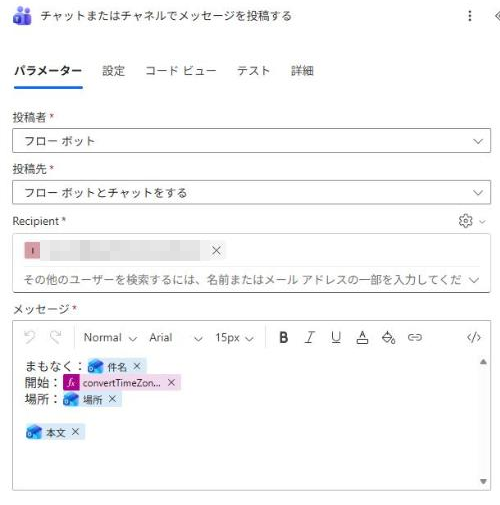
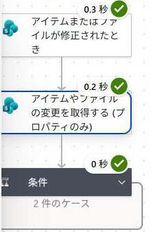
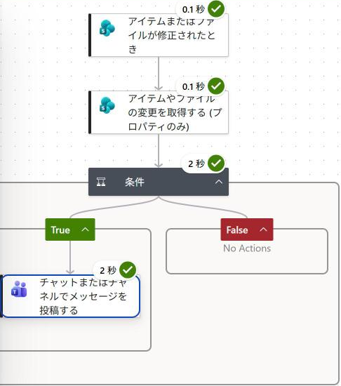
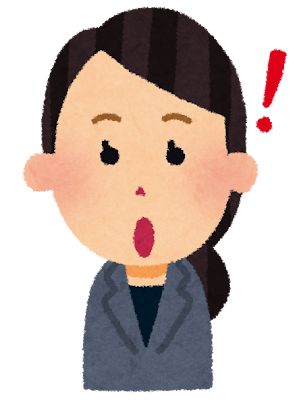

PA45 第34回｜ハンズオン手順
「完了した？」と聞かなくていい。ステータスが変わったときだけ Teams に届くリスト通知SharePoint の「問い合わせ管理」リストで、どの列が変わったかをフローが見分けます。メモを書き足しても静かなまま、ステータスが変わったときだけ Teams に届きます。
今日つくるもの： リストの行が書き換わったら、
ステータスが変わったときだけ Teams に投稿するフロー。
✏️ アイテムまたはファイルが修正されたとき→
🔍 アイテムやファイルの変更を取得する→
⚖️ 条件（ステータスが変わった？）→
💬 Teams に投稿
■ 今回の考え方（スライドの考え方①②）
- 事務の仕事は、受け付ける／書き写す／判断する／知らせる／まとめる／作る、の6つの動詞の組み合わせ。
- 今回は「知らせる」の前に「判断する」を置く。何でも知らせる通知は数が多く、読まれなくなる。
- メールで届けばよいなら、リストの「ルール」でも列の変更を知らせられる。Teams に出したい・文面を決めたいときにフローが効く。
- 持ち帰る1つ＝フローが「どの列が変わったか」を見分けて、決めた列の変更だけ知らせる。
📖 この手順書の読み方： 各アクションに表があります。表は 欄 ／ 入れるもの（⚡ のどのアクションから選ぶか）／ なぜ・あとでどう役立つか の順です。オレンジの「次に渡るもの」は、そのアクションが終わったあと、後ろのアクションに何が渡るかです。
🔰 初参加の方へ： ここから始めて大丈夫です。SharePoint と Teams が使える会社・学校のアカウントがあれば作れます（個人の Microsoft アカウントでは作れません）。
準備
SharePoint に「問い合わせ管理」リストを作る（5分）
この段のゴールSharePoint のサイトに、タイトル・担当・ステータス・メモの4列を持つ「問い合わせ管理」リストがあり、3行入っている
なぜフローが見張るリストを先に作る。ステータスは選択肢の列にしておくと、STEP 4 の文面で「完了」などの値がそのまま使える。
1
リストを作ってよい SharePoint のサイト（チームのサイトなど）を開き、「＋ 新規」→「リスト」→「空白のリスト」。名前は 問い合わせ管理。
2
「＋ 列の追加」で次の3つを作ります。
担当（1 行テキスト）／ステータス（選択肢：未対応・対応中・完了）／メモ（複数行テキスト）
最初からある「タイトル」列は、問い合わせの件名を入れる列として使います。
3
練習用に3行入れます（タイトル／担当／ステータス／メモ）。
請求書の再発行をお願いしたい／佐藤／対応中／10/28 電話で受付
ログインできない／鈴木／未対応／
見積の有効期限を知りたい／山田／完了／メールで回答済み
次に渡るものリスト → STEP 1・2 のリスト名／ステータス列 → STEP 3 の ⚡
⚠️ バージョン管理： どの列が変わったかを調べるアクションは、リストのバージョン管理がオンのときに使えます（Microsoft Learn のコネクタの説明に記載）。デモで作った新しいリストは最初からオンでした。古いリストで試すときは、リストの設定でバージョン管理がオンかを確かめます。
STEP 1
フローを作る（トリガー＝アイテムまたはファイルが修正されたとき）
この段のゴールトリガー「アイテムまたはファイルが修正されたとき」に、準備のサイトとリストが入っている
なぜリストの行が書き換わったら動く入口。この時点では、メモでもステータスでも、どの列の書き換えでも動く。見分けるのは STEP 2・3。
1
「作成」→「自動化したクラウド フロー」。フロー名は PA45 第34回 ステータス通知。トリガーの検索欄に SharePoint と入れ、「アイテムまたはファイルが修正されたとき」を選んで「作成」。
デモでは「修正されたとき」と入れて検索すると0件でした。「SharePoint」で探すと一覧に出ます。よく似た「項目が作成されたとき」「ファイルが作成または変更されたとき (プロパティのみ)」と取り違えないようにします。
2
SharePoint の「アイテムまたはファイルが修正されたとき」
| 欄 | 入れるもの（どこから選ぶか） | なぜ・あとでどう役立つか |
|---|
| サイトのアドレス | 準備でリストを作ったサイト | STEP 2 でも同じサイトを選ぶ |
|---|
| リスト名 | 問い合わせ管理 | STEP 2 でも同じリスト |
|---|
欄の名前は 11/4 のリハーサルで画面に合わせて確定します（Learn の英語名は Site Address／List or Library Name）。次に渡るもの⚡ ID（書き換わった行）と、トリガーが見た時間のはじめ／おわりの印（開始トークン・終了トークン）→ STEP 2 の欄。⚡ タイトル・⚡ ステータス Value → STEP 4 の文面
STEP 2
どの列が変わったかを調べる
この段のゴール「アイテムやファイルの変更を取得する (プロパティのみ)」に、サイト・リスト・ID・はじめ・おわりが入っている
なぜリストは書き換えのたびに版（1.0 → 2.0 → 3.0）を残している。このアクションは、トリガーが見た前の版と今の版を比べて、列ごとに「変わった（true）／変わっていない（false）」を返す。
1
トリガーの下の「＋」→「アクションの追加」で、SharePoint の「アイテムやファイルの変更を取得する (プロパティのみ)」を選びます。
2
SharePoint の「アイテムやファイルの変更を取得する (プロパティのみ)」
| 欄 | 入れるもの（どこから選ぶか） | なぜ・あとでどう役立つか |
|---|
| サイトのアドレス・リスト名 | STEP 1 と同じ | 同じリストの変化を見る |
|---|
| ID | ⚡ ID（アイテムまたはファイルが修正されたとき） | 書き換わった行 |
|---|
| Since（比べるはじめ） | ⚡ トリガーの開始トークン | 前の版。ここから |
|---|
| Until（比べるおわり） | ⚡ トリガーの終了トークン | 今の版。ここまで |
|---|
Since・Until の日本語の欄名と、⚡ 一覧での開始・終了トークンの表示名は 11/4 のリハーサルで画面に合わせて確定します（Learn の説明：Trigger Window Start token／End token）。次に渡るもの⚡ 「列が変更されています。 ステータス」（true／false）→ STEP 3 の条件。ほかに「開始バージョン番号」「終了バージョン番号」と、列ごとの「列が変更されています。 ○○」が出てくる（デモでは16件）
STEP 3
ステータスが変わったかで分ける（条件）
この段のゴール条件の左に ⚡ 列が変更されています。 ステータス、真ん中が「等しい」、右が true
なぜここで「知らせるか」を決める。メモだけの書き換えは false になり、いいえ側に進んで何もしない。
1
「＋」→「アクションの追加」→ コントロール「条件」。
2
| 欄 | 入れるもの（どこから選ぶか） | なぜ・あとでどう役立つか |
|---|
| 左の値 | ⚡ 列が変更されています。 ステータス（アイテムやファイルの変更を取得する） | ステータスが変わったか |
|---|
| 演算子 | 等しい | そのまま |
|---|
| 右の値 | true（手で入力） | 変わった＝はい |
|---|
⚡ 一覧では「列が変更されています。 タイトル／担当／ステータス／メモ」のように、列の数だけ並びます。説明はどれも「このフィールドが変更の有無を示すブール値」です。次に渡るものはい（True）のとき → STEP 4。いいえ（False）のときは何もしない
STEP 4
はいのときだけ Teams に投稿する
この段のゴール条件の True の中に「チャットまたはチャネルでメッセージを投稿する」があり、文面に件名とステータスが入っている
なぜ知らせるのは、変わったときだけ。文面には、何が・どうなったかを入れて、リストを開かなくても分かるようにする。
1
条件の True の中の「＋」→ Teams の「チャットまたはチャネルでメッセージを投稿する」。
2
Microsoft Teams の「チャットまたはチャネルでメッセージを投稿する」

| 欄 | 入れるもの（どこから選ぶか） | なぜ・あとでどう役立つか |
|---|
| 投稿者 | フロー ボット | Teams での送り主 |
|---|
| 投稿先 | フロー ボットとチャットをする | 練習は自分あて |
|---|
| Recipient | 自分のメール アドレス | 届く人 |
|---|
| メッセージ | 問い合わせのステータスが変わりました／件名：⚡ タイトル／ステータス：⚡ ステータス Value | ← どれも STEP 1 のトリガーの ⚡ |
|---|
次に渡るものここで全部1つにまとまる：件名 ← STEP 1 のタイトル／ステータス ← STEP 1 のステータス Value
STEP 5
保存して、2通り試す
この段のゴールメモの書き足しでは届かず、ステータスを完了にすると Teams に届く
なぜどちらの書き換えでもフローは動く（実行履歴に残る）。Teams に出すかを、STEP 3 の条件で分けていることを確かめる。
1
右上の「保存」。リストに戻り、「請求書の再発行をお願いしたい」のメモだけを書き足して保存します。
2
フローの実行履歴を開くと、新しい実行があります。条件まで緑で、Teams には何も届きません。

3
次に同じ行の
ステータスを「対応中」→「完了」にして保存します。1分ほどで Teams に届きます（デモでは書き換えて1分以内に動いた）。

| 欄 | 入れるもの（どこから選ぶか） | なぜ・あとでどう役立つか |
|---|
| 届いた本文（デモ） | 問い合わせのステータスが変わりました／件名：請求書の再発行をお願いしたい／ステータス：完了 | STEP 4 の文面どおり |
|---|
⚠️ 試し終わったら： このトリガーはリストを見張り続けます。練習が終わったら、フローの詳細画面で「オフにする」にしておくと止まります。
おまけ
時間に余裕がある人向け
この段のゴール（任意）
なぜ当日の45分では扱わない。持ち帰って試す人向け。
1
「完了」になったときだけにする： STEP 3 の条件に行を追加して「かつ」で、⚡ ステータス Value 等しい 完了 を足します。対応中に戻したときは知らせなくなります。（デモではまだ試していません）
2
チームのチャネルに出す： STEP 4 の投稿先を「チャネル」にして、チームとチャネルを選びます。窓口のみんなに届きます。（デモではまだ試していません）
3
リストの「ルール」との違い： メールで届けばよいなら、リストのルールでも「列が変更されたとき」に人へ知らせられます（Microsoft サポートの説明では、ルールが送るのはメールの通知）。Teams に出したい・文面や条件を自分で決めたいときはフロー。SharePoint の従来の通知（アラート）は 2026年7月で廃止と案内されています。
4
第9回からの続き： 第9回は「変更されたら知らせる」でした。今回はその間に STEP 2・3 を挟んで、どの列が変わったかで分けています。